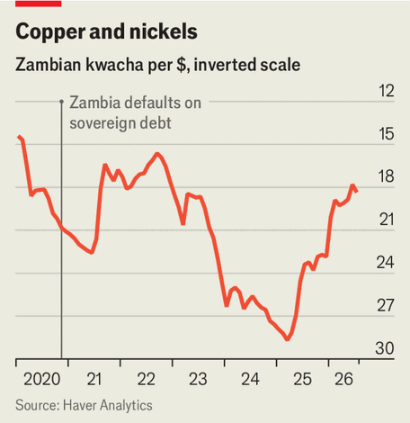

African countries are souring on the dollar
The yuan and local currencies stand to benefit
Aug 6th 2026
ON CAIRO ROAD, a bustling commercial strip in Lusaka, Zambia’s capital, traders and shoppers once haggled over gadgets, furniture and other goods priced in dollars. For decades the greenback was similarly entrenched across the Zambian economy. From car purchases to business contracts, large transactions were routinely settled in the American currency. Interest rate decisions made by the Federal Reserve in Washington rippled through to the price of Zambian groceries and rents. When Zambia defaulted on its debt in 2020, the dollar’s strength at the time exacerbated the fallout.
The southern-African country is now trying to wean itself from the greenback. Last October Zambia became the first country on the continent to accept mining royalties and taxes in yuan. This eases capital flows between Zambia and China, the biggest buyer of Zambia’s abundant copper and its biggest creditor. It also reduces Zambian exposure to the dollar. What is more, since December the Bank of Zambia has required domestic transactions to be paid in local currency, boosting demand for the kwacha. Offenders face fines, up to two years in prison or both.
Zambia is illustrative of Africa in general. The dollar still dominates, with some 70% of the continent’s external public debt and many cross-border transactions still denominated in the currency. But countries are incrementally adopting alternatives to “king dollar”.
One beneficiary is the yuan. Egypt, Nigeria and South Africa, three of Africa’s biggest economies, have agreed new currency swaps with China as the share of trade settled in yuan expands. Kenya has converted dollar-denominated loans into yuan, potentially saving up to $215m a year in interest costs, equivalent to nearly a fifth of its debt-service payments to China in 2025. Around two-thirds of the country’s outstanding debt to China is now denominated in yuan. Ethiopia and Mozambique are negotiating similar arrangements.
Several banks are building infrastructure to support yuan transactions. Last September Standard Bank, Africa’s largest lender by assets (which is part-owned by the Industrial and Commercial Bank of China, a giant state-owned lender), became the first to clear transactions through China’s Cross-Border Interbank Payment System. This has allowed businesses to settle payments directly in yuan.
Absa, one of South Africa’s largest banks, and Ecobank, whose reach spans over 30 African countries, are also looking to facilitate direct payments in yuan. Although the number of cross-border transactions in yuan remains small relative to those in dollars, it rose more than fourfold between 2020 and 2024 (the latest year for which official data are available).
Yet African governments do not want merely to swap reliance on one foreign currency with dependence on another. They are therefore also ramping up efforts to promote their own monies both at home, as with Zambia’s directives, and in cross-border trade. In 2022 the African Export-Import Bank, a trade-finance institution, and the African Union launched the Pan-African Payment and Settlement System. The platform allows banks to settle intra-African trade in local currencies. More than 160 commercial banks and 22 central banks have signed up, which could in time save businesses perhaps $5bn in annual banking and foreign-exchange costs.
Despite such apparent benefits, the adjustment for African businesses that have long relied on dollars could be painful, says Jibran Qureishi of Standard Bank. In Zambia, the kwacha-only policy has already sent companies scrambling to rewrite dollar-denominated contracts or renegotiate supplier arrangements. Many are nursing losses on legacy contracts. Exporters earning revenues in dollars now face the cost of constantly moving between currencies, which they may start passing on to customers. Plenty of domestic industries, such as construction and agriculture, import fuel and equipment. They are also suddenly on the hook for recurring currency transaction fees, now that they are being starved of dollars from local operations with which to buy imports.

At least the importers’ kwachas go further. After a stellar 2025 the currency has strengthened by around 15% against the dollar this year (see chart). Investors piled into kwacha-denominated government bonds after Zambia raised the cap on the share of annual issuance non-residents can buy from 5% to 23%—another way the government is promoting the currency (and making it easier to roll over its debt). King dollar wields vast global power. But local currencies like the kwacha might yet become stronger local potentates. ■